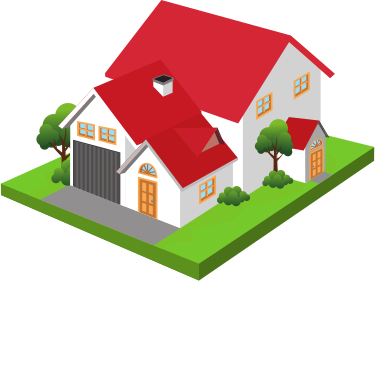

O projektu Appka HYPOŠKA
Náš projekt má seznámit kohokoli s postupem, co ho čeká, když potřebuje hypotéku.
Stránka nebude nic nabízet, prodávat, ani nesežene nejnižší úrok. Naším cílem je to, aby nikdo nemusel důsledně dodržovat něco, co po něm banka/poradce chce a on netuší proč. Bude mít srozumitelné, přátelsky podané informace. Vše pro něj bude jednodušší, rychlejší a vždy si bude jist, že ví, o čem se rozhoduje.
Při zpracování hypoték jsem se setkala s tím, že lidé jsou buď velice dobře připraveni a ví dopředu vše nebo naopak o hypotéce ví jen to, že ji potřebují na zaplacení bydlení.
Chceme vytvořit web, který shrne celý postup zpracování a teorii do přehledných částí. Navíc se návštěvník může sám rozhodnout, kde chce jít víc do hloubky.
Nemáme v plánu tvořit novinový článek, ale zajímavou stránku, která se bude měnit dle výběru, který návštěvník při své cestě naší stránkou zvolí.
Jeho cesta bude rozdělena do sekcí:
- Co plánuje
- Jak doloží, že na to má příjem
- Zkusíme přibližně zjistit, jestli na to má
- Kam se pro hypotéku může vydat
Těšíme se na výsledek Slávka a Verča